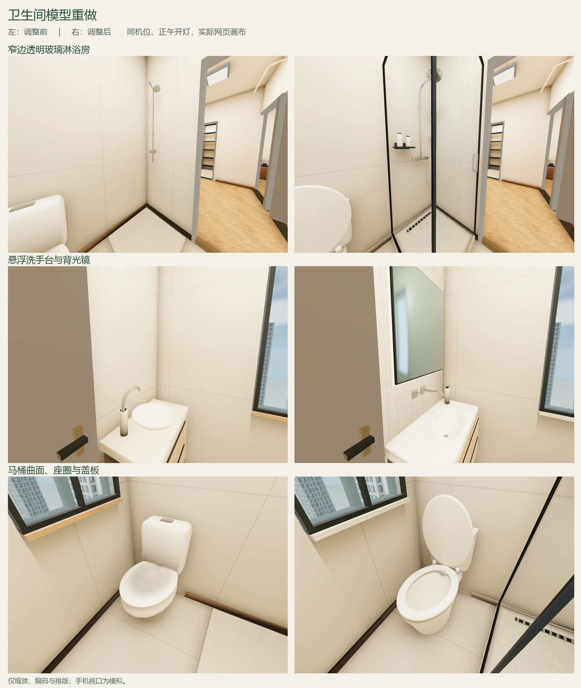
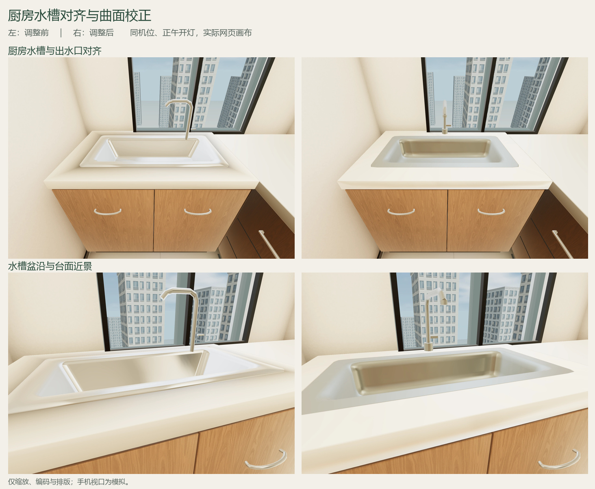

杭州 · 璞荟铭庭 / main
卫浴重做与厨房水槽校正
按用户选择重做窄边透明玻璃淋浴房，补齐8毫米厚玻璃、窄框、铰链、把手、低挡水边、线性排水槽与整套花洒。洗手台沿用A参考图的悬浮木柜方向，改为一体内凹盆、墙出龙头和背光镜；马桶重做连续陶瓷曲面、座圈、支撑与掀起的盖板。原墙、门、窗与基本分区保留。
厨房水槽与开孔统一居中于柜体，水龙头出水口对准盆中心；盆沿嵌平安装，与北、东两段台面保持同高；台面凹槽与细密封边负责收口，没有用共面叠层遮掩落差。盆沿改用规则高密度环带与独立平面法线，改为柔和不锈钢反射，消除旧转角折痕。新布局已重生成固定光照、AO与房间反射，灯光基准与室内曝光沿用上轮校正。
24组前后对比：桌面/手机 × 正午/夜晚 × 6个机位。每张均等待静态照明与房间反射加载完成，相机位置、方向、FOV及亮度控制相同。未对最终截图调亮、压暗或修补阴影。手机、微信UA与WebKit均为自动化模拟，尚未真机微信验证。


检查包含模型闭合、法线、支座贴墙、淋浴玻璃厚度及透明深度设置、水槽/出水口实际坐标、台面高度、门扫掠、通道和固定光照状态。原建筑快照与219张建筑回退贴图保持，仍为自包含WebGL1网页。整体视觉验收及实际手机性能继续跟踪。